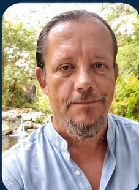

Analyser
Rassembler les données utiles, distinguer ce qui est établi de ce qui reste incertain et nommer franchement les points de blocage.
Conseil, analyse et ingénierie au service des décisions qui engagent le vivant
Une décision sur l’eau touche aussi l’agriculture, la santé, les sols, l’économie locale et la vie quotidienne. Diploval aide celles et ceux qui doivent décider à remettre ces liens sur la table, à vérifier les faits et à construire des solutions applicables. Pas des principes hors-sol : des choix que l’on peut expliquer, mettre en œuvre et suivre dans le temps.
Regarder l’ensemble. Agir au bon endroit.
Comment nous travaillons
Nous partons des faits, du droit, des personnes concernées et des contraintes du terrain. Les scénarios viennent ensuite. Le but n’est pas d’ajouter un rapport à une pile, mais de rendre une décision plus claire, plus solide et plus facile à suivre.
Rassembler les données utiles, distinguer ce qui est établi de ce qui reste incertain et nommer franchement les points de blocage.
Montrer ce qu’une décision déplace ailleurs : vers un autre service, un autre territoire, une autre population ou les années qui suivent.
Proposer des options utilisables : une méthode, un cadre de dialogue, un dispositif pilote, un texte ou un plan d’action que l’on peut réellement tester.
Nos dossiers
Les dossiers les plus récents sont présentés ici. La recherche, plus bas, permet ensuite de retrouver une note, un mémorandum, une analyse ou un rapport par mot-clé, format ou échelle d’action.
Recherchez par mot-clé, puis affinez par format ou échelle d’action. Les documents transversaux restent accessibles dans la vue « Toutes ».
Un mot-clé suffit. On peut aussi filtrer par format et par échelle d’action : territorial, national, européen ou international.
20 travaux référencés · 13 publications consultables · 6 affichés
Aucun document ne correspond à cette recherche. Essayez un autre mot-clé ou effacez les filtres.
Chaque fiche donne un résumé court, la date, la version, l’échelle d’action et, lorsque le document est publié, un accès direct au PDF original.
Dossiers en cours
Trois dossiers sont actuellement en cours d’instruction. Ils sont présentés ici avant publication afin de rendre visible le travail engagé, sans anticiper les conclusions.
Face à la répétition des sécheresses et aux tensions sur la ressource, Diploval examine les conditions d’une sécurité hydrique anticipée : hiérarchie des usages, expertise scientifique, gouvernance, dérogations, agriculture et protection des ressources.
Analyse du projet d’élevage de saumons au Verdon-sur-Mer : prélèvements et rejets d’eau, énergie, effluents, conditions d’élevage, risques, gouvernance et effets possibles sur l’estuaire de la Gironde.
Étude du projet énergétique Horizeo à Saucats : forêt, sols, biodiversité, carbone, risque incendie, eau, aménagement du territoire, gouvernance et alternatives possibles.
Une architecture claire
Trois niveaux distincts, conçus pour se répondre : la Charte fixe le socle, le Référentiel fournit la méthode d’examen et le Codex Vitae développe la traduction normative.
Énonce les constats fondamentaux et les principes directeurs qui servent de base commune lorsqu’une décision touche au vivant.
Fournit une grille d’examen pour confronter un projet, une politique, une activité ou une dérogation aux faits, au droit et à leurs effets réels.
Transforme les principes du vivant en propositions juridiques concrètes et évolutives : lois modèles, protocoles, mécanismes de protection, procédures et outils d’application.
Du principe à l’application. La Charte indique le cap. Le Référentiel aide à examiner la situation. Le Codex Vitae prépare les réponses normatives. Aucun de ces outils ne se substitue au droit en vigueur ; ils sont conçus pour être confrontés au réel, discutés et améliorés.
Consulter la CharteAvec qui et pour quoi
Une collectivité, un élu, un service public, une association, un collectif citoyen, une ONG, un réseau professionnel ou une entreprise peut solliciter Diploval. Le travail est adapté au besoin, aux délais et aux moyens disponibles.
Quand un sujet devient confus, sensible ou trop technique, nous remettons les éléments à plat. Le résultat peut prendre la forme d’une note courte, d’un mémorandum complet ou d’un dossier d’aide à la décision.
Lorsque les acteurs ne se parlent plus, ou ne parlent pas du même problème, nous pouvons préparer et organiser un cadre de dialogue où les désaccords sont traités sans les masquer.
Nous examinons un projet, un règlement ou une politique à partir de ses effets réels : ce qu’il améliore, ce qu’il fragilise, les alternatives possibles et les personnes qui porteront les risques.
Une idée peut sembler excellente sur le papier et se révéler maladroite une fois appliquée. Nous préférons commencer à une échelle maîtrisable, observer ce qui se passe et ajuster avant de généraliser.
Selon le dossier, Diploval peut préparer une contribution, une relecture argumentée, un avis ou un document de plaidoyer fondé sur le droit positif et les effets concrets de la décision.
Une annonce ne suffit pas. Nous pouvons suivre sa traduction réelle, relever les écarts entre les engagements et les actes, puis proposer des points de correction.
Dates à retenir
Les prochains rendez-vous, déplacements et temps forts de Diploval. Une date, un lieu ou un sujet : l’essentiel doit pouvoir se retrouver en quelques secondes.
Prochaines dates — Les prochaines rencontres, interventions et déplacements seront ajoutés ici au fur et à mesure de leur confirmation.
Le podcast de Diploval
Comprendre. Relier. Agir.
Les Voix du Vivant accueillera des prises de parole courtes et des conversations avec celles et ceux qui observent, décident, travaillent ou vivent les transformations en cours. L’audio laisse de la place aux nuances, aux hésitations et au temps de comprendre.
Des paroles travaillées, mais pas mises en scène.
Des formats courts, quand un sujet appelle une parole claire et directe.
Des échanges sans mise en scène inutile, avec le temps d’aller au fond.
Une première prise de parole sur l’origine de Diploval, sa méthode et la manière dont le projet entend travailler avec les territoires, les collectifs et les institutions.
Chaque épisode sera accompagné d’un résumé et, lorsque le format le permet, d’une transcription.
Garanties & transparence
Diploval assume une ligne fondée sur le vivant et l’intérêt général sans s’aligner sur un parti. Cette rubrique rend visibles les règles qui encadrent nos analyses, nos corrections et le regard extérieur que nous souhaitons ouvrir sur nos travaux.
Diploval n’est rattaché à aucun parti politique et n’a pas vocation à défendre un camp. Ses analyses peuvent conduire à soutenir, questionner ou critiquer une décision, quelle que soit l’identité de ceux qui la portent. Les mêmes exigences de vérification sont appliquées à tous. Les partenariats, soutiens ou situations susceptibles de créer un conflit d’intérêts sont rendus publics lorsqu’ils concernent un travail présenté par Diploval.
Diploval s’engage à distinguer autant que possible les faits établis, les données disponibles, les hypothèses, les interprétations et les prises de position. Les sources déterminantes sont identifiées et les documents sont datés, versionnés et présentés selon leur statut réel. Lorsqu’un sujet le justifie, Diploval recherche les éléments contradictoires et précise les informations qui demeurent incertaines ou manquantes.
Une information signalée comme erronée est examinée. Lorsqu’une erreur est confirmée, elle est corrigée et les modifications importantes doivent pouvoir être retracées. Une personne, une organisation ou une institution directement concernée par une analyse peut transmettre des éléments contradictoires ou des documents nouveaux. Ils sont examinés selon les mêmes exigences de vérification. Le contradictoire ne signifie pas l’abandon d’une conclusion : il participe à sa solidité.
Signaler une erreur ou transmettre un élémentDiploval souhaite ouvrir certains travaux à un regard citoyen extérieur. Le Cercle pourra signaler une incompréhension, un angle mort, une contradiction ou une question qui mérite d’être approfondie. Il ne constitue ni un comité de validation ni un organe de décision : la responsabilité éditoriale demeure celle de Diploval. Son rôle est d’apporter un regard supplémentaire avant ou après publication.
Le fonctionnement est volontairement simple : contribuer quand un sujet correspond à ses disponibilités ou à son expérience, sans obligation de participer à chaque dossier.
Toute personne souhaitant apporter un regard extérieur peut proposer sa participation. Aucune expertise particulière n’est obligatoire : expériences de terrain, compétences professionnelles et regards citoyens ont vocation à se croiser. Il n’est pas nécessaire de partager toutes les positions de Diploval ; un désaccord argumenté peut être utile à la relecture.
Diploval propose ponctuellement un document ou une partie de dossier. Les membres répondent selon leurs disponibilités et peuvent signaler une incompréhension, une source manquante, un angle mort, une contradiction ou une question à approfondir. Le Cercle ne vote pas les conclusions et ne dispose pas d’un droit de veto.
Argumenter les remarques, distinguer autant que possible opinion et élément factuel, signaler un éventuel conflit d’intérêts, respecter la confidentialité lorsqu’un document est transmis avant publication et préserver un cadre de dialogue respectueux. Le Cercle ne doit pas être utilisé comme une tribune partisane, militante ou commerciale.
La transparence ne consiste pas à prétendre ne jamais se tromper. Elle consiste à rendre sa méthode compréhensible, ses intérêts visibles et ses erreurs corrigibles.
Questions fréquentes
Six réponses courtes pour comprendre avec qui nous travaillons, ce que nous produisons et dans quel cadre.
Aux collectivités, élus, services publics, associations, collectifs citoyens, ONG, réseaux professionnels et entreprises qui doivent éclairer une décision, sortir d’un blocage ou bâtir une démarche plus cohérente.
Selon le besoin : une analyse, une note stratégique, un mémorandum, une grille d’évaluation, une proposition de texte, un cadre de dialogue, un programme pilote ou un dispositif de suivi. Le format est choisi après avoir compris le problème.
Un premier échange permet de préciser la situation, les personnes concernées, les délais et les moyens disponibles. Diploval propose ensuite un cadrage écrit avec le périmètre, les livrables, le calendrier et le coût. Rien n’est engagé tant que ce cadre n’est pas accepté.
Oui. Diploval n’est rattaché à aucun parti politique. Ses engagements d’indépendance, de non-partisanerie et de transparence sont détaillés dans la rubrique Garanties & transparence. Diploval est une SASU en cours d’immatriculation ; la procédure est engagée. Les informations légales seront complétées dès leur attribution.
Non. La Charte constitue le socle de principes de Diploval. Le Codex Vitae est son référentiel normatif : il traduit progressivement ces principes en lois modèles, protocoles, mécanismes de protection, procédures et outils d’application. Ces propositions peuvent nourrir le débat juridique et institutionnel, mais elles ne remplacent pas le droit en vigueur tant qu’elles n’ont pas été adoptées par l’autorité compétente.
Oui. Les règles de réutilisation sont précisées avec les publications. Pour les erreurs, corrections ou éléments contradictoires, les engagements applicables sont détaillés dans Garanties & transparence.

À propos de Diploval
Diploval est porté publiquement par Souix Nathorod. Son parcours mêle droits humains, environnement, travail associatif, accompagnement du monde agricole, formation et projets citoyens. Ces expériences ont montré la même difficulté : les décisions sont souvent traitées séparément alors que leurs conséquences, elles, se rejoignent.
Diploval a été créé pour travailler précisément à cet endroit : entre les faits, le droit, les institutions et la vie quotidienne. La structure ne prétend pas remplacer les compétences déjà présentes. Elle aide à les relier, à rendre les désaccords lisibles et à construire des propositions qui puissent réellement être discutées et mises en œuvre.
Partir de ce qui se passe réellement, pas d’un modèle plaqué d’avance.
Faire travailler ensemble des acteurs qui n’emploient pas toujours les mêmes mots ni les mêmes méthodes.
Regarder ce qu’une décision change demain, ailleurs et pour celles et ceux qui en porteront les effets.
Diploval · SASU en cours d’immatriculation — procédure engagée.
Souix Nathorod
Fondateur de DiplovalFranck Saubin à l’état civil
Entrer en dialogue
Présentez-nous la situation simplement. Le premier échange sert à vérifier si Diploval peut être utile, de quelle manière et dans quel cadre.